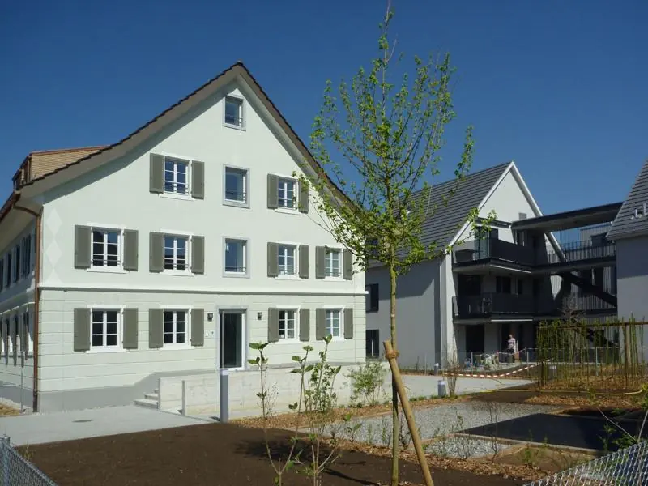
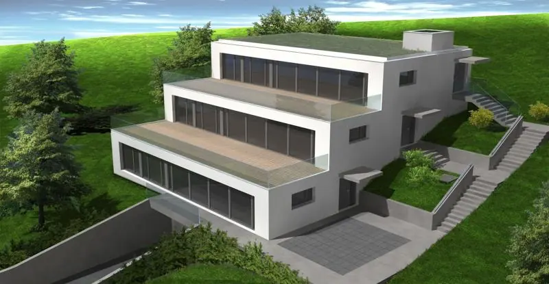
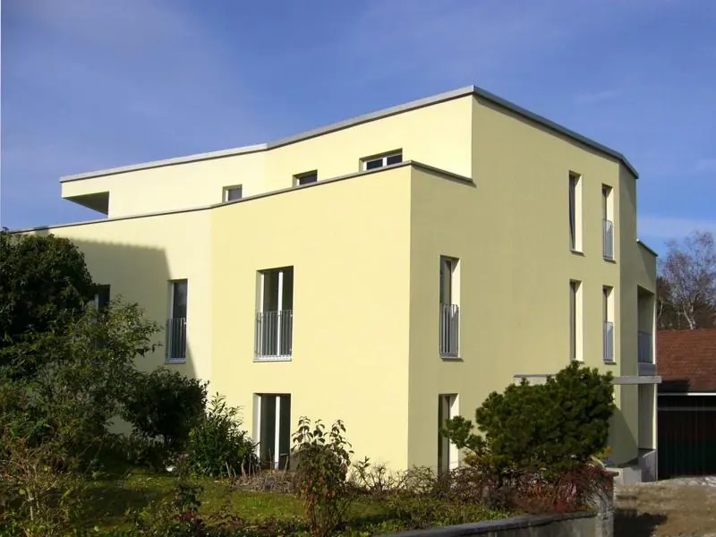
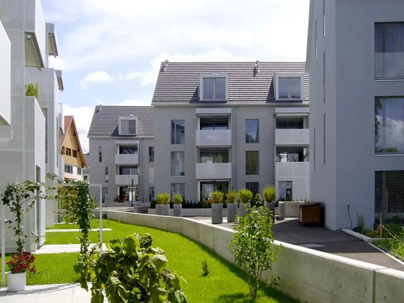
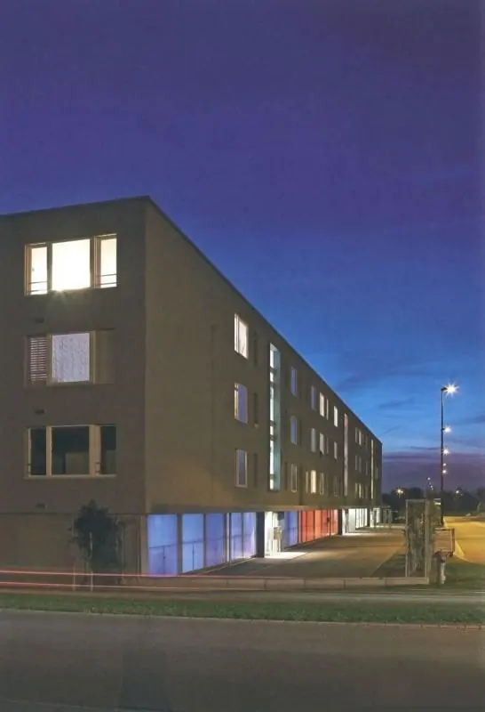

Industriestrasse Apartment Building Uster
Refurbishment of an apartment building
- Completion
- 2024
- Client
- SBB AG (Swiss Federal Railways), Zurich
apb architekten ag from Uster has completed 12 residential buildings since 2002 – in Dübendorf, Feldmeilen, Greifensee, Niederuster, Uster, Volketswil and Wald.
Clients: Baugesellschaft Lediweg; Baugesellschaft Seegarten; RAK AG Immobilien- und Baugesellschaft; SBB AG (Swiss Federal Railways); “Teienstrasse” consortium.
Refurbishment of an apartment building

Energy-efficiency refurbishment of a detached house

New town villa in monolithic construction, MINERGIE-P

Façade refurbishment with a large photovoltaic system

New housing development with commercial units in the historic core zone

New terraced building with exclusive owner-occupied apartments

New development with buildings for housing, offices, commerce and a day nursery

New terraced building with ideal views of Lake Zurich

MINERGIE level with geothermal probe and controlled ventilation

New housing development with five apartment buildings in the village core zone

New free-standing building with 18 exclusive owner-occupied apartments

New apartment building with six owner-occupied apartments
Questions about a project or a task of your own? Get in touch